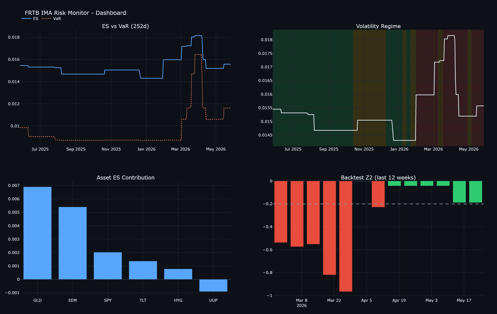

Where I'm from
A line or two about Charlotte, your roots, and the path that brought you to Rochester.
Hi, I'm Marks — a Statistics & Finance student at the University of Rochester who's genuinely into data analytics, statistical modeling, and quantitative risk. Lately I've been building a live FRTB risk monitor that computes regulatory capital and backtests itself, and digging through FRED data and labor statistics to find the signals that actually move the needle — I like turning messy data into things that hold up under a second look.
I'm a junior at the University of Rochester pursuing a double major in Statistics and Finance, with a Certificate in Actuarial Studies in progress and a place on the Dean's List every semester.
My work sits at the intersection of quantitative methods and capital markets — Bayesian inference, regression diagnostics, financial statement analysis, and the kind of careful data engineering that lets a model actually be trusted.
I like running research projects end-to-end: from raw FRED pulls and PostgreSQL schemas, through diagnostics and convergence checks, to published Tableau dashboards and equity research write-ups. The boring plumbing is half the work, and where most analyses quietly go wrong.
The stuff that doesn't fit on a resume. In progress — I'll keep adding.
A line or two about Charlotte, your roots, and the path that brought you to Rochester.
2–3 current books. A mix of finance and something else shows range — novel, history, biography.
Music, podcasts, audiobooks. Specific is more memorable than “I like jazz.”
Chinese literature & history, math, music — pick what's actually true now, in your own voice.
The thing you'd build, write, study, or start. Specific dream > vague one.
Something a recruiter would actually remember. Skip the safe answer.
Independent research — full pipeline, code, and write-up on each.
A production-grade, automated risk system computing Basel III FRTB Internal-Models-Approach capital — Value at Risk, Expected Shortfall, stress calibration, and a Standardised-Approach comparison — on a multi-asset book, served to a live, deployed dashboard.

An automated macro dashboard that quantifies how the official U-3 unemployment rate systematically understates labor market stress — and tracks the leading indicators that actually signal turning points.
Built and compared three regression families on 4,800+ daily S&P 500 returns (2007–2026) to predict realized volatility and quantify risk persistence — the empirical backbone of any dynamic VaR framework.
p < 0.0001); directly supports dynamic VaR and portfolio risk frameworks used in industry.Implemented a hierarchical Bayesian model from scratch with a custom Metropolis-Hastings sampler — not a library call — to estimate group-level probabilities and quantify uncertainty rigorously.
PSRF = 1.0); effective sample sizes exceeding 26,000 across all chains.Built a 5-year pro forma model and DCF valuation using CAPM-derived WACC across multiple macroeconomic scenarios; stress-tested beta, WACC, and terminal growth via sensitivity tables. Closed with a structured equity research report and a supported “Hold” recommendation.
Collaborative research with Prof. Michael Rizzo across 11 universities. Identified a significant correlation between endowment-per-student and U.S. News rankings — presented to Economics faculty with data-driven conclusions on institutional resource-allocation tradeoffs.
Statistical Methodology · Financial Statement Analysis · Investments · Statistical Computing in R · Financial Management · Accounting · Corporate Finance
Junior Financial & Operations Analyst
Lecturer & Event Organizer (2021–present) · Assistant Lecturer (2019–2021)
I'm actively recruiting for winter 2026 & summer 2027 internships and full-time roles in quantitative research, equity research, actuarial, and data / risk analytics. If any of that sounds like a fit, I'd love to hear from you.